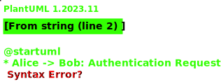

A taglet that generates UML diagrams with PlantUML for inclusion in the javadoc.


Just use the @plantUml tag:
/**
* Description.
*
* <img src="example.svg">
*
* This package/class ...
*
* <!--
* @plantUml example.svg
* Alice -> Bob: Authentication Request
* Alice <-- Bob: Authentication Response
* ' -->
*/
This is rendered as:
Description.

This package/class …
Note the carefully crafted “escapes”. The usage of “<” and “>” in PlantUML
make javadoc complain about illegal HTML tokens. Of course, you could use
“<” and “>” but this reduces the readability of the UML descriptions.
So, to work around that, we put the PlantUML tag with the description in
an HTML comment (from “<!--” to “-->”). In order to make sure that
the closing “-->” isn’t interpreted by PlantUML, we make it a PlantUML
comment. You also have to avoid all “-->” arrows in your PlantUML description
as this would terminate the HTML comment prematurely. Luckily, this isn’t too
hard because you can always exchange the left and right side of such a relation.
It’s also possible to use @startuml and @enduml instead, as usual. @startuml is
simply a synonym for @plantUml and @enduml will be ignored entirely. Use this for
compatibility with other tools, like e.g. the
PlantUML Eclipse Plugin or the
PlantUML IDEA Plugin.
Actually, using @startuml and @enduml makes escaping look a bit less weird:
/**
* <!--
* @startuml example.svg
* Alice -> Bob: Authentication Request
* Alice <-- Bob: Authentication Response
* @enduml
* -->
*/
As the closing “-->” is now the text passed to the @enduml tag
(which ignores it), it needn’t be marked as a PlantUML comment any more.
Invoking
Gradle
Configuring a taglet in the javadoc task is not explicitly shown in the DSL Reference. The required properties can be found in the standard otions
Here’s an example:
configurations {
javadocTaglets
}
dependencies {
javadocTaglets "org.jdrupes.taglets:plantuml-taglet:<version>"
}
javadoc {
options.tagletPath = configurations.javadocTaglets.files as List
options.taglets = ["org.jdrupes.taglets.plantUml.Taglet"]
...
}
The latest version available on maven central is shown in the badge at the beginning of this page.
Command line
Specify the taglet on JavaDoc’s command line:
javadoc -taglet org.jdrupes.taglets.plantUml.Taglet -tagletpath /path/to/plantuml-taglet.jar:/path/to/plantuml.jar
This could be simplified by providing a “fat jar”, but I doubt that anybody would really use it.
Maven
Still using this? Well, you’re on your own…
Notes
This taglet is based on the PlantUML integration of Abnaxos’ great pegdown-doclet.
Note that this taglet makes use of the internal javadoc API as provided with
JDK8 to access the RootDoc from the taglet. At the time of this writing, this
is a reasonable choice because JDK7 has reached end of life and the taglet API
will change dramatically in JDK9.
This taglet is released under the GPL 3.0.
- See Also:
- PlantUML